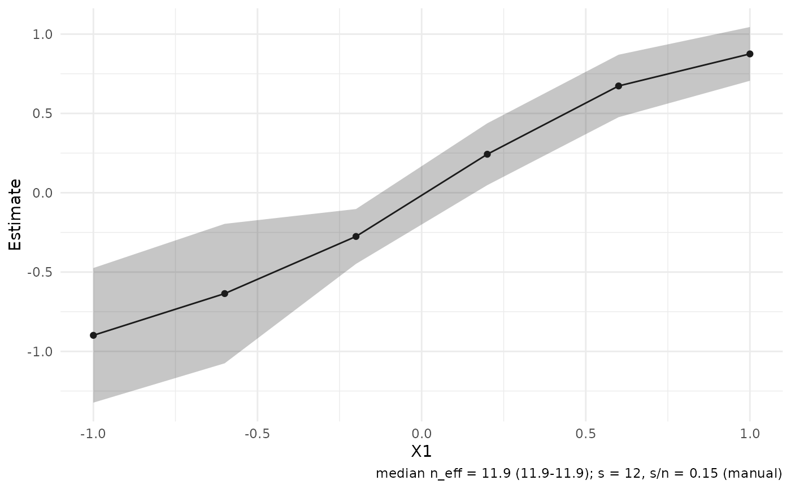

Plot estimates with confidence bounds across target points
Source:R/plot-estimates.R
plot_estimates.RdThe estimate panel of the plotting layer: point estimates with normal
confidence bounds from the stored estimator-specific standard errors, drawn as a
profile band when the targets vary along a single stored coordinate, as
a forest layout for small non-profile target sets, and as pointranges
otherwise. autoplot() and plot() on rdistnn_np_result, rdistnn_cate_result and rdistnn_affine_ratio_result
objects delegate here.
Usage
plot_estimates(
object,
level = 0.95,
style = c("auto", "profile", "pointrange", "forest"),
x_var = NULL,
shade_significant = FALSE,
candidates = "default",
...
)
autoplot.rdistnn_np_result(object, ...)
autoplot.rdistnn_cate_result(object, ...)
autoplot.rdistnn_affine_ratio_result(object, ...)
autoplot.rdistnn_plqr_result(object, ...)
autoplot.rdistnn_gmm_result(object, ...)
# S3 method for class 'rdistnn_np_result'
plot(x, ...)
# S3 method for class 'rdistnn_cate_result'
plot(x, ...)
# S3 method for class 'rdistnn_affine_ratio_result'
plot(x, ...)
# S3 method for class 'rdistnn_plqr_result'
plot(x, ...)
# S3 method for class 'rdistnn_gmm_result'
plot(x, ...)Arguments
- object
A fitted result object accepted by
plot_data_estimates().- level
Confidence level for the bounds (default
0.95).- style
One of
"auto","profile","pointrange", or"forest"."auto"picks a profile band when a profile axis exists and there are at least four targets, a forest layout for2..12non-profile targets, and pointranges otherwise.- x_var
Optional profile-axis override: a stored coordinate name (see
attr(plot_data_estimates(object), "x0_names")), anx0_*column name, or a coordinate index.- shade_significant
Logical (default
FALSE); for profile-style CATE/CLATE panels, add a rug along the axis where the confidence interval excludes zero. Intervals are marked, never point estimates.- candidates
Candidate rows to compare for grid fits. The default
"default"preserves the scalar-fit display. Use"all"or a character vector of candidate ids to compare stored grid candidates without refitting.- ...
Passed to methods (for
autoplot()/plot()) or ignored.- x
A fitted result object (for the
plot()methods).
Details
Every panel carries an honesty caption with the median effective sample
size across targets (when weight diagnostics are available) and the
kernel order s with its provenance (paper_default or manual).
CATE and CLATE panels draw a dashed zero reference line.
Experimental methods
Methods for rdistnn_plqr_result objects are experimental, as is all PLQR
functionality in this release; see plqr_dnn().
Examples
if (requireNamespace("ggplot2", quietly = TRUE)) {
set.seed(1)
n <- 80
x_mat <- matrix(rnorm(n * 2), n, 2,
dimnames = list(NULL, c("X1", "X2")))
y_vec <- x_mat[, 1] + rnorm(n, sd = 0.3)
X0 <- cbind(seq(-1, 1, length.out = 6), 0)
fit <- np_dnn(X = x_mat, X0 = X0, Y = y_vec, k = 1L, s = 12L)
plot_estimates(fit)
}
